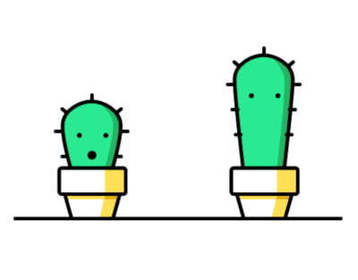

DESARROLLO WEB
HTML
Es un lenguaje de programación que se utiliza para el desarrollo de páginas de Internet. Se trata de la siglas que corresponden a HyperText Markup Language, es decir, Lenguaje de Marcas de Hipertexto
En html se pueden representar 16 miloones de colores
Semantica De HTML
- Header
- NAv
- Section
- Aside
- Footer
CSS
Es un lenguaje de diseño gráfico para definir y crear la presentación de un documento estructurado escrito en un lenguaje de marcado.
Todo elemento de css tiene un atributo y valor
Partes de una caja en html
- Pading: Espacio que hay entre el contenido y la caja
- Borde: El borde de la caja
- Margin: espacio entre elemento y elemento
JAVASCRIPT
Es un lenguaje ligero e interpretado, orientado a objetos con funciones de primera clase, más conocido como el lenguaje de script para páginas web, pero también usado en muchos entornos sin navegador, tales como node.js, Apache CouchDB y Adobe Acrobat. Es un lenguaje script multi-paradigma, basado en prototipos, dinámico, soporta estilos de programación funcional, orientada a objetos e imperativa.
CANVAS
SVG